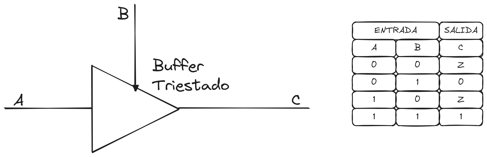
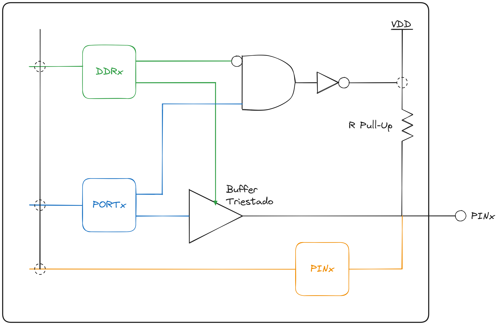
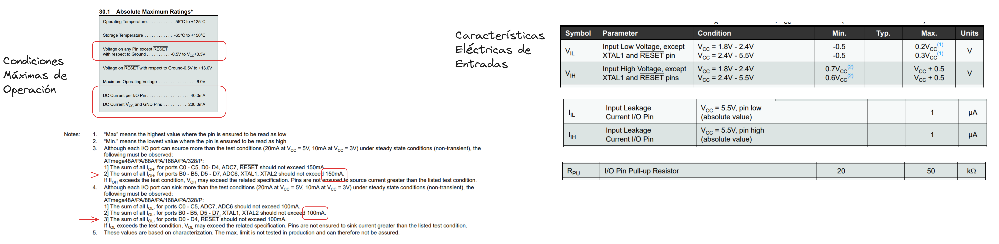
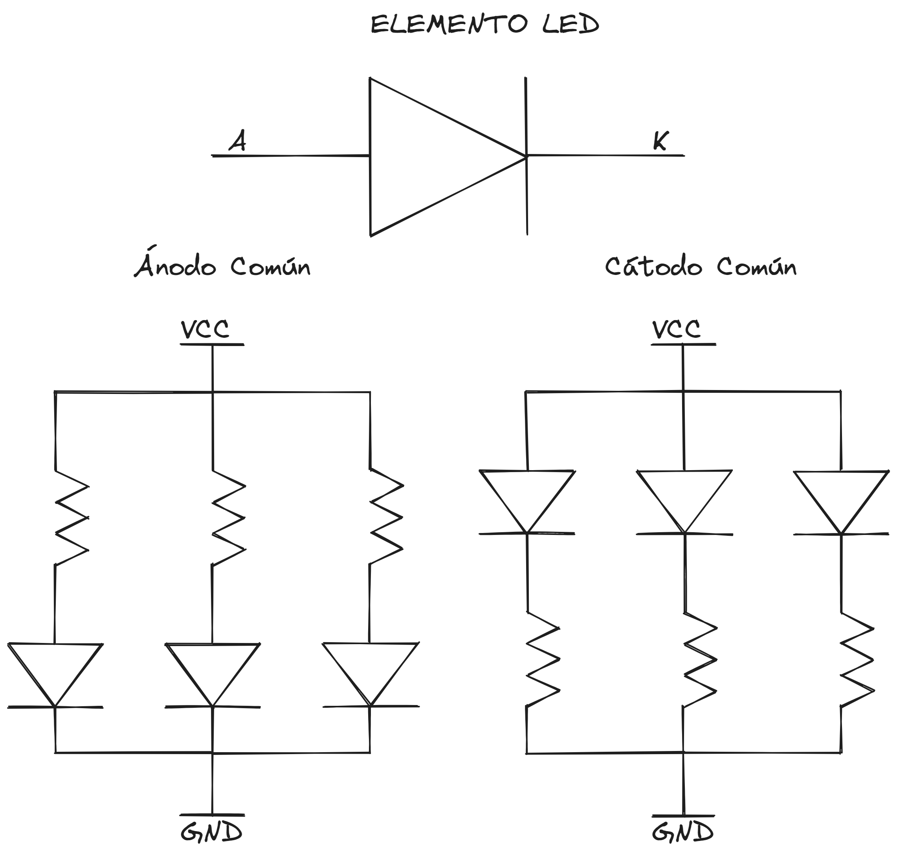
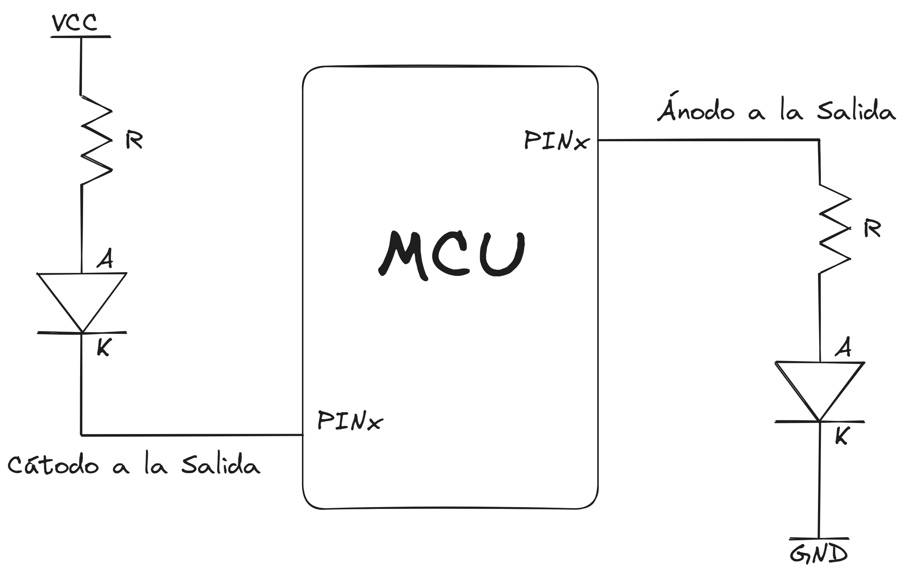

CDyM - TP1
Table of Contents
1. CDyM - TP1
1.1. Ejercicio No 1: Repaso de lenguaje C
- Investigue sobre los distintos tipos de variables en C y sus modificadores: static, volatile, register, const. ¿Cuáles son los tipos de datos por defecto en el compilador que utilizaremos?
Los tipos devariables que utilizaremos seran:
static : Asigna una direccion de memoria fija para el objeto en ejecucion. Hace que las variables locales de una funcion conserven su valor en distintas llamadas sucesivas.
int foo(){
static x = 10;
x = x + 1;
return x;
}
int main(){
for(int i = 0; i<10; i++){
int a = foo();
prinf("%d", a);
}
return 0;
}
Lo que devuelve [10 … 20]
volatile : Para objetos modificados desde el exterior del programa principal mediante procesos externos (ya sea por interrupciones o por hardware).
register : Almacenamiento en un registro.
Tiene un tamaño limitado, solo para varriables char, int, float.
const : No puede ser modificado por el programa.
- Investigue sobre las sentencias del pre-procesador de C, entre ellas: #include, #define, #ifdef y typedef.
#include : Para incluir ficheros, librerias u otro programa en C. Contiene prototipos de funciones, constantes o macros.
#define : Define un macro o una constante. El preprocesador lo sustituye en el resto del programa.
#if : Se puede preguntar por el valor de una constante o la existencia de una macro.
typedef : Para definir tipos de datos propios. Por ejemplo typedef int tipoVecInt[4]
- ¿Qué es una constante de carácter? ¿qué es una cadena de caracteres?
Una constante caracter contiene numeros enteros en el rango [-128:128].
No son del tipo char y se los puede representar en hexadecimal.
Una cadena de caracteres es un arreglo en el que cada elemento es de tipo char, por ejemplo char nombre [lim]
- ¿Cuál es la diferencia entre una variable local y una global? ¿Por qué utilizaría una u otra?
Variable Global : Su ambito es todo el programa.
Variable Local : Su ambito se restringe a la funcion que lo haya creado.
- Describa todos los operadores lógicos de C. ¿cúal es la diferencia entre los operadores && y &, || y |? ¿Qué es una máscara de bits?
Los operadores logicos en C son :
Negacion ! :
Conjuncion && :
Disyuncion || :
Las mascaras de bits en C son :
AND & :
OR | :
NOT ~ :
Shift Derecha >> :
Shift Izquierda << :
- ¿Qué es un prototipo de función en C? ¿Cuáles son las alternativas para pasar argumentos a una función? ¿Cómo se retorna un valor desde una función?
Un prototipo de funcion especifica el nombre, tipo de retorno y parametros (sin incluir el cuerpo) de una funcion. Informa al compilador de su existencia antes de su definicion.
int suma(int *a, int b); // Prototipo de Funcion
int main(){ // Programa principal
int z = suma(5,2);
return 0;
}
int suma(int *a, int b){ // Funcion
return a + b;
}
Las alternativas para pasar argumentos a una funcion son:
Por valor (int b) donde la funcion recibe una copia del valor.
Por referencia (int *a) donde la funcion recibe una direccion de memoria a la variable y procede a modificar la original.
- Repase el concepto de punteros y arreglos. Explique con ejemplos la relación entre ambos.
Un puntero es una variable que almacena la direccion de memoria de otra variable.
int a = 10; int *p; // Es un puntero a entero p = &a; // El puntero almacena la direccion de memoria de a
Un arreglo es una collecion de elememntos del mismo tipo, almacenado en ubicaciones contiguas de memoria.
int arr[5] = {1,2,3,4,5};
La relacion esta en que el nombre del arreglo actua como un puntero al primer elemento del vector
int arr[5] = {1,2,3,4,5};
int *p = arr;
*(p + 2) = 3;
*(arr + 2) = 3;
- Investigue sobre los tipos de variables struct y union (estructuras y uniones) en C. De un ejemplo de cada caso.
Las variables tipo struct permiten agrupar diferentes tipos de datos bajo un mismo nombre en cada campo, los cuales tienen su propia ubicacion de memoria.
struct persona{
char nombre[50];
int edad;
float altura;
}
Las variables tipo union permiten almacenar diferentes tipos de datos en la misma ubicacion de memoria, solo pueden contener un valor a la vez.
union numero {
int entero;
float flotante;
}
- ¿Qué son los campos de bit de una estructura?
Los campos de bit (birfields) permiten definir campos individuales que ocupan un numero especifico de bits
struct cBit{
unsigned int flag : 3; // Ocupara tres bits
}
1.2. Ejercicio No 2: Familia de microntroladores AVR
- Investigue sobre los diferentes modelos de la familia Atmega AVR. Tabule los periféricos, la cantidad de RAM y de FLASH que poseen las distintas versiones. En particular detalle las características de los modelos Atmega328P y Atmega2560 utilizados en las plataformas Open-Source Arduino UNO y MEGA.
| Atmega328p | Atmega2560 | |
|---|---|---|
| Reloj | 20 MHz | 16 MHz |
| Memoria Flash | 32 Kb | 256 Kb |
| SRAM | 2 Kb | 8 Kb |
| EEPROM | 1 Kb | 4 Kb |
| PINs | 28 | 100 |
El Atmega328p es un AVR de bajo consumo, tiene menos memoria y menos capacidad para diferentes perifericos. Es adecuado para proyectos simples. El Atmega2560 es en cambio un modelo de alto rendimiento.
- Detalle las características de la CPU AVR, incluyendo: Arquitectura de la CPU (Realice un diagrama en bloques), modelo de programación, modos de direccionamiento y resumen del conjunto de instrucciones.
La arquitectura de la CPU AVR es del tipo RISC, diseñada para ofrecer un alto rendimiento con bajo consumo de energia.
Utiliza tambien una arquitectura Harvard donde la memoria de programa y datos tienen buses independiente.
Tiene 32 registros de proposito general de 8 bits (R0-R31) utilizado para operaciones aritmeticas y logicas.
Posee un stack pointer que indica la instruccion siguiente a ejecutar.
Tiene diferentes modos de direccionamiento tales como : directo, indirecto, inmediato, inmediato con desplazamiento e indirecto con registro-indice
Tiene un conjunto de intrucciones que incluye operaciones aritmeticas basicas, logicas, de desplazamiento, comparacion y de control de flujo. Soporta instrucciones de carga y almacenamiento para acceder a memoria y perifericos, ademas de interrupciones con prioridades.
- Puertos de Entrada/Salida: Describa qué registros se utilizan para controlar los puertos de entrada y salida. Realice un diagrama en bloques de un terminal de entrada y salida y explique su funcionamiento.
Para entender el funcionamiento de un termina de entreada salida primero debemos de repasar el concepto del buffer triestado. Un buffer triestado hace que el pin de salida no tenga relevancia en el circuito o por ejemplo borrar la influencia de un dispositivo forzandolo a Hi-Z.
Esto permite compartir la misma linea de salida y que en un mismo bus no hayan dos señales.

Figure 1: Diagrama de Bloques Puerto I/O
Por ejemplo, el protocolo I2C necesita de resistencia pull-up en sus dos canales de lineas de comunicacion. Cuando el dispositivo esta inactivo, ponen las salidas de sus buffer triestados en hi-Z, entonces fuerza un "1" o tension alta las lineas SDA y SCL.
Estructura del puerto I/O
| DDRx | PORTx | Config. | Pull-Up |
|---|---|---|---|
| 0 | 0 | Input | No |
| 0 | 1 | Output | Si |
| 1 | 0 | Output | No |
| 1 | 1 | Output | No |

Figure 2: Diagrama de Bloques Puerto I/O
- Investigue cual es la capacidad de corriente que puede manejar un terminal individual configurado como salida. ¿Depende del estado lógico? ¿cuál es la capacidad de corriente que puede manejar el microcontrolador con todos los puertos funcionando simultáneamente?
Para obtener la capacidad de corriente que puede manejar uno o varios terminales del MCU deberemos de leer la hoja de datos.

Figure 3: Caracteristicas Electricas
- Indique cuales son las dos posibilidades de conexión de un LED a un terminal de entrada y salida. Calcule la resistencia serie para que la corriente máxima por cada LED sea de 5mA. Muestre como configurar el terminal como salida y como modificar su estado lógico.
Un LED (Light Emitting Diode) es un dispositivo semiconductor que emite luz cuando una corriente electrica pasa a travez de el. Un LED posee dos terminales o bornes para su conexion, el Anodo y el Catodo.
El Anodo es el terminal positivo del LED, es el punto por donde entra la corriente.
El Catodo es el terminal negativo del LED, es el punto por donde sale la corriente.
El LED puede estar polarizado de dos formas diferente:
En la polarizacion directa, el anodo del LED se conecta al terminal positivo de la fuente de alimentacion y el catodo al terminal negativo. Cuando se aplica un voltaje adecuado, el LED se enciende y emite luz. La corriente fluye desde el anodo hacia el catodo.
En la polarizacion inversa, el anodo del LED se conecta al terminal negativo de la fuente de alimentacion y el catodo al terminal positivo. El LED no se enciende y no permite el paso de corriente (o solo permite un paso minimo de corriente de fuga) La polarizacion inversa puede dañar el LED si se aplica un voltaje demasiado alto en esta configuracion.
Para la conexion de multiples LEDs (como una matriz) y tener un mayor control sobre los mismos, tenemos dos opciones para su conexion.
En la configuracion Anodo Comun, todos los anodos de los LEDs se conectan juntos a un voltaje positivo comun. Los catodos de los LEDs se conectan a los pines de control que pueden ser configurados para permitir o bloquear el flujo de corriente. Si quisieramos encender el LED en esta configuracion deberemos de poner un CERO en el pin del controlador.
En la configuracion Catodo Comun, todos los catodos de los LEDs estan conectados juntos a una conexion tierra comun. Los anodos de los LEDs se conectan a los pines de control que pueden ser configurados para permitir o bloquear el flujo de corriente. Si quisieramos encender el LED en esta configuracion deberemos de poner un UNO en el pin del controlador.

Figure 4: Elelemento LED
Los LED múltiples de ánodo común tienen la ventaja de que pueden ser controlados desde una fuente de alimentación diferente a la del circuito que los controla, porque sus patas de color individuales están conectadas a tierra, que es el potencial compartido tanto para el circuito de control como para el circuito de alimentación. Sin embargo, tienen una gran desventaja: el cátodo de cada chip LED individual es también su base mecánica, y eso significa que en un LED de ánodo común, los chips LED individuales no se pueden colocar en una bandeja reflectora metálica compartida. Esto es especialmente malo para los tipos de "caída con cable". Es un problema menor para los tipos SMD pero, en general, los chips individuales deben colocarse un poco más separados y eso significa que no se puede enfocar la luz demasiado bien. No se tiene este problema con los tipos de cátodos comunes. Los chips LED individuales se pueden colocar directamente uno al lado del otro en el mismo recipiente reflector metálico, ya que ese es el cátodo común. En cambio, con un tipo de cátodo común, hay que alimentar los LED a través del chip que los controla, o utilizar dos transistores adicionales por color que separan las fuentes de alimentación.
Entonces si queremos conectar un LED a un terminal Entrada/Salida, tendremos las siguiente opciones:

Figure 5: Alternativas Conexion LED
En donde en la conexion Anodo a la Salida el LED se enciende cuando la salida del microcontrolador es alta. Y en la conexion Catodo a la Salida el LED se enciende cuando la salida del microcontrolador es baja.
Para calcula la resistencia serie que limita la corriente a \(5mA\), se debe conocer el Voltaje de Alimentacion (\(V_{cc}\)) y la caida de Voltaje del LED (\(V_{LED}\)).
La resistencia R calculada por Ley de Ohm es : \[ R = \frac{V_{cc} - V_{LED}}{I_{LED}} \] Si asumimos un par de datos como que el Voltaje de Alimentacion es \(5V\), una caida de Voltaje del LED de unos \(2V\) y utilizamos el dato de que la corriente maxima por cada LED no puede superar los \(5mA\) \[ R = \frac{V_{cc} - V_{LED}}{I_{LED}} = \frac{5V - 2V}{0.005A} = 600\Omega \]
Para configurar un puerto como salida
DDRB |= (1 << PORTBX);
Si queremos forzar un valor alto:
PORTB |= (1 << PORTBX);
Si queremos forzar un valor bajo:
PORTB &= ~(1 << PORTBX);
- Se desea conectar un pulsador a una entrada digital del MCU. Investigue los posibles esquemas de conectar un pulsador y determine el algoritmo más adecuado para detectar en cada caso cuando el pulsador se presiona y se suelta. ¿Qué es una resistencia de pull-up? ¿y de pull-down? ¿Importa su valor? Investigue sobre cómo utilizar los pull-up internos del MCU.
Los diferentes esquemas para conectar un pulsador incluyen diferentes variantes entre Resistencias de Pull-Up o Pull-Down ya sean internas o externas.
VER LAS NOTAS DE CLASE PARA LAS DIFF CONFIGURACIONES, CONEXIONES Y CALCULOS
Queda pendiente completar esta seccion
1.3. EJERCICIOS DE REPASO
- Dado un número N de 8 bits sin signo, realice una función en C que devuelva la suma de los números consecutivos de 1 hasta N. Analice el tipo de variable que retorna más conveniente.
#include <stdio.h>
unsigned int suma_consecutivos(unsigned char N) {
return (unsigned int)N * (N + 1) / 2;
}
int main() {
unsigned char N = 255;
unsigned int resultado = suma_consecutivos(N);
printf("La suma de los números de 1 a %u es: %u\n", N, resultado);
return 0;
}
- Implemente una función que reciba como parámetros un arreglo (vector) y su tamaño en bytes. La función debe reordenar el vector de manera inversa, es decir: el primer valor pasará a ser el último y así siguiendo. Los parámetros de entrada deben pasarse por referencia y por valor respectivamente.
#include <stdio.h>
// Función para invertir un arreglo
void invertir_arreglo(int *arr, size_t size_in_bytes) {
// Calcular el número de elementos en el arreglo
size_t num_elements = size_in_bytes / sizeof(int);
// Usar dos índices, uno al principio y otro al final del arreglo
for (size_t i = 0; i < num_elements / 2; ++i) {
// Intercambiar los elementos en las posiciones i y (num_elements - i - 1)
int temp = arr[i];
arr[i] = arr[num_elements - i - 1];
arr[num_elements - i - 1] = temp;
}
}
int main() {
// Ejemplo de uso de la función
int arreglo[] = {1, 2, 3, 4, 5};
size_t tamano = sizeof(arreglo); // Tamaño en bytes del arreglo
printf("Arreglo original: ");
for (size_t i = 0; i < tamano / sizeof(int); ++i) {
printf("%d ", arreglo[i]);
}
printf("\n");
// Llamar a la función para invertir el arreglo
invertir_arreglo(arreglo, tamano);
printf("Arreglo invertido: ");
for (size_t i = 0; i < tamano / sizeof(int); ++i) {
printf("%d ", arreglo[i]);
}
printf("\n");
return 0;
}
- Realice una función de C para convertir un número binario de 8 bits sin signo en un conjunto de caracteres ASCII que correspondan a los dígitos de dicho número. El número a convertir se debe pasar como parámetro y los dígitos ASCII resultantes deberán retornarse en una cadena de caracteres. Por ejemplo, si el dato de entrada es 124 (0x7C) los 3 dígitos ASCII serán ‘1’,’2’ y ‘4’.
#include <stdio.h>
#include <stdlib.h>
// Función para convertir un número de 8 bits sin signo a una cadena de caracteres ASCII
void convertir_a_ascii(unsigned char numero, char *cadena) {
// Usar sprintf para convertir el número a una cadena de caracteres
sprintf(cadena, "%u", numero);
}
int main() {
// Ejemplo de uso de la función
unsigned char numero = 124;
char cadena[4]; // Cadena para almacenar el resultado, 3 dígitos + 1 carácter nulo
// Llamar a la función para convertir el número
convertir_a_ascii(numero, cadena);
// Imprimir el resultado
printf("El número %d convertido a cadena es: %s\n", numero, cadena);
return 0;
}
- Realice una función en C, que reciba como parámetro un número N de 8 bits y lo envíe de manera serie por un bit de salida de un puerto a razón de un bit cada 1ms comenzando por el menos significativo.
#include <avr/io.h>
#include <util/delay.h>
// Define el pin de salida
#define BIT_OUT_PORT PORTB
#define BIT_OUT_DDR DDRB
#define BIT_OUT_PIN PB0
// Función para enviar un número de 8 bits de manera serial
void enviar_serial(unsigned char numero) {
// Configurar el pin de salida como salida
BIT_OUT_DDR |= (1 << BIT_OUT_PIN);
// Enviar los bits comenzando por el menos significativo
for (int i = 0; i < 8; ++i) {
// Extraer el bit i-ésimo
unsigned char bit = (numero >> i) & 0x01;
// Enviar el bit al pin de salida
if (bit) {
BIT_OUT_PORT |= (1 << BIT_OUT_PIN); // Poner el pin en alto
} else {
BIT_OUT_PORT &= ~(1 << BIT_OUT_PIN); // Poner el pin en bajo
}
// Esperar 1 ms
_delay_ms(1);
}
}
int main(void) {
// Ejemplo de uso de la función
unsigned char numero = 0x7C; // 124 en decimal
while (1) {
// Enviar el número de manera serial
enviar_serial(numero);
// Añadir un retardo adicional entre envíos si es necesario
_delay_ms(1000);
}
return 0;
}
- Explique qué hacen las siguientes sentencias de C: DDRB=0x0F; PORTB=0x0E;
DDRB=0x0F; : "Data Direction Register" controla el modo de los pines en el puerto B. Si tiene un bit en 1 es una salida, si tiene un bit en 0 es una salida.
0x0F : 00001111b
PORTB=0x0E; : Depende como fue configurado DDRB:
Si DDRB es una entrada, habilita o desactiva el pull-up interno de cada pin.
Si DDRB es una salida, configura el estdo logico de cada pin como nivel alto o bajo.
- Explique qué hace la siguiente sentencia de C: PORTC |= (1<< PORTC 0) | (1<< PORTC2) | (1<< PORTC3) ¿Cuál es la diferencia con la última del ejercicio anterior. ¿Qué representa PORTCx? ¿Dónde y cómo está definido?
PORTC |= (1<< PORTC0) | (1<< PORTC2) | (1<< PORTC3)
Es una mascara de bits en puerto C.
(1<< PORTC0) : Desplaza hacia la izquierda en la posicion del bit un 1, en efecto crea un valor donde el bit PORTCx queda forzado a estar en 1
Los puertos van del [7:0], el numero binario creado es 00001101b
La mascara OR nos sirve para forzar un 1 con un 1 y dejar igual al resto de valores con 0.